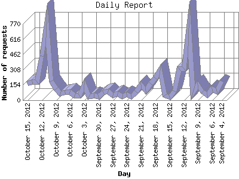

The Daily Report identifies the activity for each day within the reporting period. Remember that one page hit can result in several server requests as the images for each page are loaded.

| Day | Number of requests | Number of page requests | |
|---|---|---|---|
| 1. | September 4, 2012 | 193 | 59 |
| 2. | September 5, 2012 | 92 | 44 |
| 3. | September 6, 2012 | 114 | 45 |
| 4. | September 7, 2012 | 57 | 32 |
| 5. | September 8, 2012 | 83 | 53 |
| 6. | September 9, 2012 | 155 | 64 |
| 7. | September 10, 2012 | 79 | 42 |
| 8. | September 11, 2012 | 729 | 171 |
| 9. | September 12, 2012 | 321 | 56 |
| 10. | September 13, 2012 | 317 | 106 |
| 11. | September 14, 2012 | 89 | 47 |
| 12. | September 15, 2012 | 30 | 29 |
| 13. | September 16, 2012 | 48 | 33 |
| 14. | September 17, 2012 | 298 | 88 |
| 15. | September 18, 2012 | 222 | 70 |
| 16. | September 19, 2012 | 170 | 64 |
| 17. | September 20, 2012 | 96 | 50 |
| 18. | September 21, 2012 | 154 | 58 |
| 19. | September 22, 2012 | 87 | 85 |
| 20. | September 23, 2012 | 36 | 34 |
| 21. | September 24, 2012 | 60 | 40 |
| 22. | September 25, 2012 | 36 | 35 |
| 23. | September 26, 2012 | 67 | 50 |
| 24. | September 27, 2012 | 47 | 30 |
| 25. | September 28, 2012 | 89 | 39 |
| 26. | September 29, 2012 | 78 | 45 |
| 27. | September 30, 2012 | 34 | 32 |
| 28. | October 1, 2012 | 49 | 36 |
| 29. | October 2, 2012 | 34 | 34 |
| 30. | October 3, 2012 | 156 | 51 |
| 31. | October 4, 2012 | 51 | 40 |
| 32. | October 5, 2012 | 47 | 40 |
| 33. | October 6, 2012 | 86 | 46 |
| 34. | October 7, 2012 | 76 | 43 |
| 35. | October 8, 2012 | 68 | 48 |
| 36. | October 9, 2012 | 112 | 52 |
| 37. | October 10, 2012 | 191 | 90 |
| 38. | October 11, 2012 | 767 | 242 |
| 39. | October 12, 2012 | 447 | 99 |
| 40. | October 13, 2012 | 188 | 68 |
| 41. | October 14, 2012 | 187 | 83 |
| 42. | October 15, 2012 | 171 | 63 |
Most active day October 11, 2012 : 242 pages sent. 767 requests handled.
Daily average: 60 pages sent. 152 requests handled.
This report was generated on October 16, 2012 02:22.
Report time frame July 31, 2012 01:16 to October 15, 2012 23:22.
| Web statistics report produced by: analog 6.0 / Report Magic 2.21 |